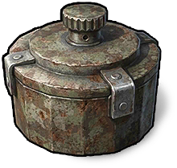

弾薬
アイテム · 弾薬感圧地雷
Pressure Mine

Pressure Mine / 弾薬製作レシピ
製作レシピ1回の製作で 1 個できます。以下は1回分の必要材料です。


リサイクルで得られる物
リサイクルで得られる物
アイテム説明
感圧地雷は平地、床、岩、大きな石に設置できる。踏んだ人が離れると爆発し、誰に対しても作動する。設置上限は10個。
Pressure Mine

Pressure Mine / 弾薬1回の製作で 1 個できます。以下は1回分の必要材料です。
感圧地雷は平地、床、岩、大きな石に設置できる。踏んだ人が離れると爆発し、誰に対しても作動する。設置上限は10個。